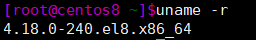
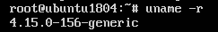
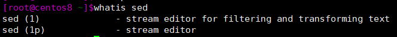
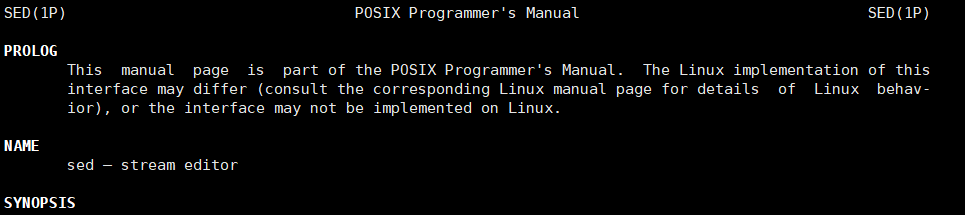

Linux基础概念和使用帮助
初步了解Linux和查看linux命令帮助的方法
Linux基础概念
什么是Linux
Linux操作系统一般指Linux发行套件系统，包含Linux内核和GNU工具，是一种免费使用和自由传播的类UNIX操作系统，使用GPL开源协议。目前已有数百款Linux发行版，其中最主流的有：debian和基于debian的Ubuntu、红帽公司的CentOS、RHEL。
基于UNIX的哲学思想
- 一切都是文件（包括硬件）
- 程序小型，单一用途
- 链接程序，共同完成复杂任务
- 避免令人困惑的用户界面
- 配置数据存储在文本中
Linux版本
Linux内核版本由主版本号、次版本号、末版本号组成、打包版本号、厂商版本组成。在上述几个Linux发行版中输入uname -r命令可查看内核版本，如下图。从左到右以点为分隔分别是主版本号，次版本号，末版本号-打包版本号，厂商版本。内核下载官网www.kernel.org 。linux允许安装多个内核，在开机时可选择使用内核。

主流Linux发行版本获取：可前往官网下载（速度较慢）或在国内镜像站点下载，如阿里云http://mirrors.aliyun.com ，搜狐 http://mirrors.sohu.com 163 http://mirrors.163.com 。在索引中选择相应版本下载.iso文件。
各版本的详细介绍可参考维基百科页面
Linux内核
Linux内核的设计理念为宏内核（又称单内核和强内核），该设计流派把所有系统服务都放到内核里，所有功能集成于同一个程序，分层实现不同功能，系统庞大复杂。
Linux内核虽是但内核，但充分借鉴了微内核设计优点，引入了模块化机制。分模块实现进程管理、内存管理、网络管理、驱动程序、文件系统、安全功能等功能。
Linux启动流程
详见
https://gituserusegit.github.io/2022/07/02/Linux%E5%90%AF%E5%8A%A8%E6%B5%81%E7%A8%8B/
Linux进程和内存概念
详见
https://gituserusegit.github.io/2022/07/02/Linux%E5%90%AF%E5%8A%A8%E6%B5%81%E7%A8%8B/
获取使用帮助
在Linux实际使用中，面对繁杂的命令和选项、模块或配置文件的用途，难以完全记住。因此可以使用多种方法获取相关使用帮助。
whatis 查看命令帮助
whatis COMMAND 使用数据库显示命令的简短描述。下图中（1）（1p）对应man帮助中的章节

–help或-h选项查看命令帮助
COMMAND –help 显示用法总结和参数列表，绝大多数命令支持。如果是内部命令还可使用help COMMAND的形式。
info
info COMMAND 命令信息页，适合通用文档参考，没有参数，列出所有页面。
man查看命令、配置文件、模块的详细介绍
man COMMAND 提供非常详细的命令描述和使用方法 。可添加用whatis看到的章节参数进入对应man帮助页面。
man file.conf 和man module.so 同理，显示配置文件和模块的详细描述。

除了使用以上命令获取帮助，还可以尝试在安装软件包的子目录查找帮助文档，如README、INSTALL、Changelog等字样的文件，HTML、PDF、PS 等格式的文档。最后，还可以通过系统及第三方应用官方文档和知识库等网站获取所需信息。
本博客所有文章除特别声明外，均采用 CC BY-SA 4.0 协议 ，转载请注明出处！